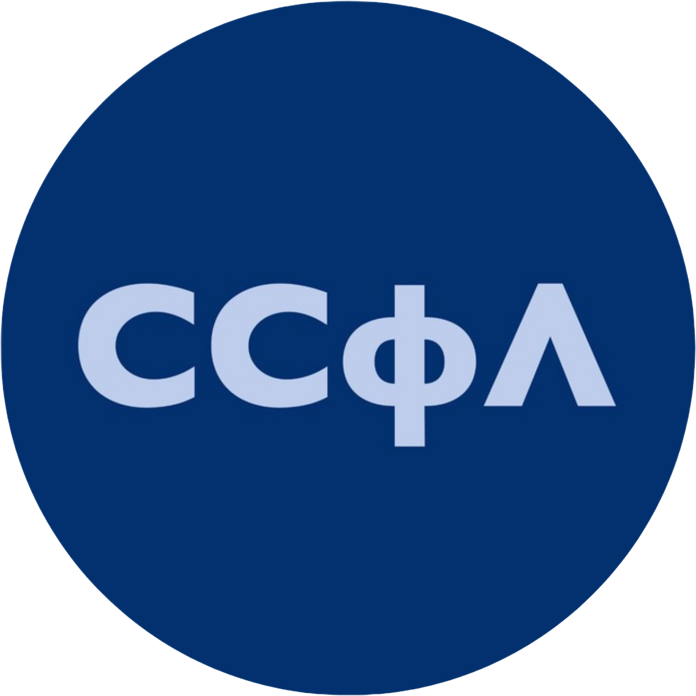

привет, мир! меня зовут арджун бхалла, это мой первый сайт, созданный для защиты контрольной работы. Здесь я расскажу немного о всяком.
|
школа 904 читать |
HSE читать |

ССфЛ читать |
ГБОУ Школа №904 - (не)обыкновенная школа. Учился тут с 1 по 11 класс.
Когда я еще был в начальной школе, она называлась по-другому и имела номер 840. Потом объединили несколько школ и мы стали 904.
Начальная, средняя и старшая школы были расположены в одном здании, пока в 2019 году старшие классы не перевели в другой корпус. Из-за этого мне приходилось топать пешочком около двадцати минут каждый будний день.
Несмотря на то, что в средней школе я готовился сдавать ЕГЭ по информатике и физике, я пошел в гуманитарный класс, в котором не было ни информатики, ни физики.
В школе мы писали на Паскале, и у меня хорошо получалось! Но после 9 класса ни разу не программировал, хотя мне это нравилось.
Несколько фактов о моей школе:
- очень прикольная школа
- находится рядом с метро
- есть разделение на профильные классы:
- математическая вертикаль (средняя школа)
- медицинский класс
- старшая школа: технический профиль
- старшая школа: естественно-научный профиль
- старшая школа: гуманитарный профиль
- социально-экономический профиль
- пицца в столовой в первом классе стоила в два раза дешевле, чем в 11
На этом все про школу!
Вышка
Я второкурсник с факультета Высшая Школа Бизнеса, ОП "Управление цепями поставок и бизнес-аналитика" в Москве. Куратор первого курса, прохожу отборы в Школу Кураторов - это студенческая организация, которая подготавливает Кураторв. Учусь в группе БЛГ221
Знал, что хочу именно в Вышку, с 10 класса. Люблю свой университет ♡
ССфЛССфЛ - студенческая организация моей ОП. Мы ежегодно делаем Посвят для перваков и Выпускной для 4 курса, мы создаем любимый праздник всех логистов и друзей - БлинNight, а также проводим образовательные встречи с представителями бизнеса.
Я прошел отбор осенью первого курса, последним этапом отбора являлось создание Антипосвята: это то же самое, что Посвят, только создают его отбирающиеся в ССфЛ для действующих членов. В процессе подготовки я познакомился с будущими лучшими друзьями.
Самм ССфЛ принес мне очень много. Познакомил со множеством самых разных людей, научил находить индивидуальный подход. Мы создали вместе Антипосвят, Блиннайт, Выпускной и Посвят - а теперь отбираем новых членов ССфЛ.
За год я хорошо показал себя в работе, пожтому теперь вхожу в состав Совета ССфЛ.
Более подробно с работами, которые я сделал для ССфЛ, можно ознакомиться на соответствующей странице сайта.